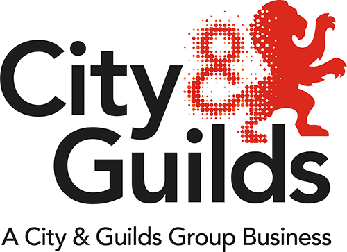

Task 3: Large equipment
Click 'NEXT' to start.
Click 'NEXT' to start.
As a chef working in a professional kitchen, you will use a number of large pieces of equipment. The equipment you use will depend on the size and nature of the establishment.
It is important to use equipment that is of good quality and best fits your needs. You need a basic knowledge of how it operates; it is also beneficial to be familiar with the various models available. The information below should be helpful in selecting and maintaining your large equipment.
It is important when using large equipment that you are fully trained and fully understand how to use it safely.

When selecting or replacing new equipment, you need to consider the following:
Regulations require that all work equipment be maintained in an efficient state, in efficient order and in good repair, and that maintenance operations on work equipment can be carried out safely.
You have now reached the end of this unit and are ready to progress to the quiz. You can do this by clicking on the tabs below. Remember that you can revisit this unit to revise at any time.
There is no media content for this task.